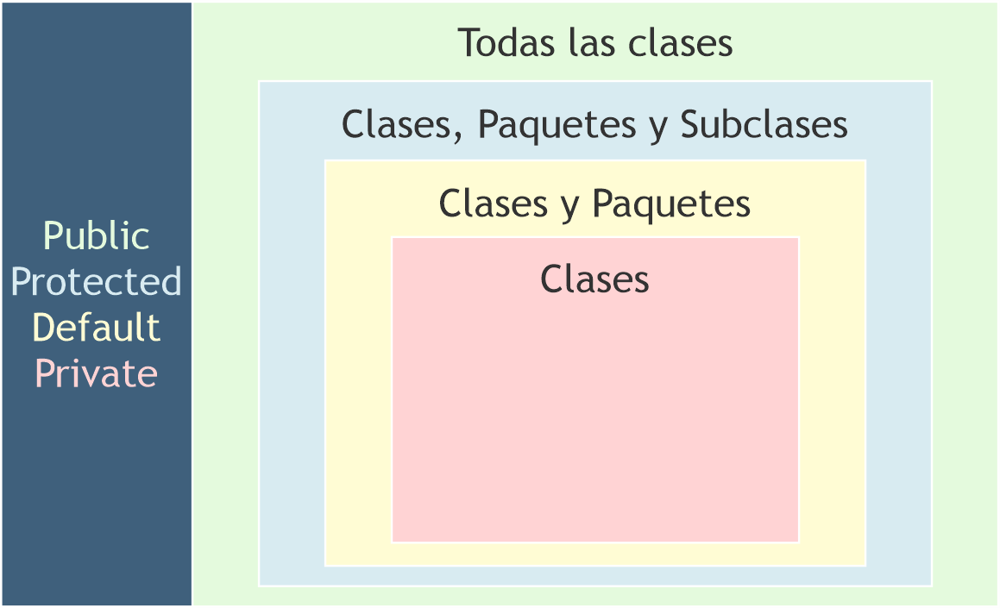

Programacion Orientada a Objetos
¿Qué es POO?
La Programación Orientada a Objetos (POO) es un paradigma de programación, es decir,
un modelo o un estilo de programación que nos da unas guías sobre cómo trabajar con él. Se basa
en el concepto de clases y objetos. Este tipo de programación se utiliza para estructurar un
programa de software en piezas simples y reutilizables de planos de código (clases) para crear instancias
individuales de objetos.
Beneficios de Programación Orientada a Objetos
Reutilización del código.
Convierte cosas complejas en
estructuras simples reproducibles.
Evita la
duplicación de código.
Permite trabajar en equipo gracias
al encapsulamiento ya que minimiza la posibilidad de duplicar funciones cuando varias personas trabajan sobre un
mismo objeto al mismo tiempo.
Al estar la clase bien estructurada permite la
corrección de errores en varios lugares del código.
Protege la información a través de
la encapsulación, ya que solo se puede acceder a los datos del objeto a través de propiedades y métodos
privados.
La abstracción nos permite
construir sistemas más
complejos y de una forma más sencilla y organizada.
Antes de empezar a comprender POO tengamos en cuenta lo siguiente:
Deuda técnica:
La deuda técnica es el coste y los intereses a pagar por hacer mal las cosas. El sobre esfuerzo a pagar para
mantener un producto software mal hecho, y lo que conlleva, como el coste de la mala imagen frente a los clientes,
etc.
Code smell:
Hace referencia al mal olor del código. Este concepto no se refiere a errores técnicos, sino a errores de orden y
diseño. Esto sucede mucho cuando intentamos crear soluciones a partir de otras soluciones. La solución a estos
casos es crear una abstracción. Cómo evitarlo Para esto debemos hacer una programación más limpia, y reusable.
Tenemos que evitar crear grandes métodos, o sea, programación estructura dentro de clases. También evitar crear
grandes clases o superclases. Y sin duda, nosotros debemos evitar a toda costa copiar y pegar código.
Código espagueti:
Se llama "código espagueti" a un código que se caracteriza por ser muy largo, monolítico (no está dividido en
partes) y presenta saltos de un punto a otro demasiado confusos para ser comprendido por otros programadores. Es
largo, sin cortar y enredado, como un espagueti.
¿Qué es modularidad?
La modularidad consiste en dividir un programa en módulos que puedan compilarse por separado, sin embargo tendrá
conexiones con otros módulos.
La modularidad también tiene principios y son los siguientes:
Capacidad de descomponer un sistema complejo.
Capacidad de componer a través de sus módulos.
Comprensión de sistema en partes.
¿Qué es una instancia?
Se llama instancia a todo objeto que derive de algún otro. De esta forma, todos los objetos son instancias de algún otro, menos la clase Object que es la madre de todas.
¿Qué es una clase?
Una clase es una plantilla. Define de manera genérica cómo van a ser los objetos de un determinado tipo. Por ejemplo, una clase para representar a animales puede llamarse ‘animal’
¿Qué es un objeto?
Un ejemplo sencillo de un objeto, como decíamos antes, podría ser un animal en este caso nos referimos más a la raza en si como un perro o un gato, y un objeto posee atributos ó propiedades.
¿Qué es un atributo?
Un animal tiene una edad, por lo que creamos un nuevo atributo de ‘edad’ y, también puede tener color, tamaño, peso, etc.
¿Qué es un método?
método se le llama a un bloque de código que tiene definido en su interior un conjunto de instrucciones, estas instrucciones realizan una determinada tarea. En este caso para los animales sus métodos serian comer y caminar.

¿Qué es encapsulación?
La encapsulación u ocultación contiene toda la información importante de un objeto dentro del mismo y solo expone la información seleccionada al mundo exterior. Esta propiedad permite asegurar que la información de un objeto esté oculta para el mundo exterior, agrupando en una Clase las características o atributos que cuentan con un acceso privado, y los comportamientos o métodos que presentan un acceso público.

¿Qué es abstracción?
Al traer datos y componentes de un objeto que me permita crear un
molde o especie de clase para generar más objetos, a eso se le llama abstracción y con el
análisis de la abstracción creamos las clases.
También podemos decir que es un principio por el cual se descarta toda aquella información que no resulta
relevante en un contexto en particular enfatizando algunos de los detalles o propiedades de los objetos, depende
principalmente del interés del observador.
La abstracción consiste en
captar las características y funciones que un objeto(Aun sin crear en proceso de análisis)
desempeña y estos son representados en clases por medio de atributos y métodos de dicha clase para posteriormente
ya proceder crear objetos a partir de dicha clase.
¿Qué es herencia?
La herencia es un proceso mediante el cual se puede crear una
clase hija que hereda de una clase padre, compartiendo sus métodos y atributos. Además de ello,
una clase hija puede sobrescribir los métodos o atributos, o incluso definir unos nuevos. Se
puede crear una clase hija con tan solo pasar como parámetro la clase de la que queremos heredar.
En el siguiente ejemplo vemos cómo se puede usar la herencia, con la clase Perro que hereda las propiedades de la
clase Animal.
¿Qué es polimorfismo?
El término polimorfismo tiene origen en las palabras poly (muchos) y morfo (formas), y aplicado a
la programación hace referencia a que los objetos pueden tomar diferentes formas. ¿Pero qué significa esto?
Pues bien, significa que objetos de diferentes clases pueden ser accedidos utilizando el mismo interfaz, mostrando
un comportamiento distinto (tomando diferentes formas) según cómo sean accedidos.
Ejemplo: tenemos la clase animal de la cual podemos crear dos objetos perro y gato, ambos objetos
heredan las propiedades de la clase animal, pero se comportan diferente, eso se denomina
polimorfismo.